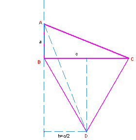

Problema 326
34. ABC es un triángulo rectángulo en B. Sobre BC hacia el exterior del
triángulo se construye un triángulo equilátero BCD, y se construye el segmento
AD. Demostrar que [BCD]=[ACD]-[ABD], donde [BCD],
[ACD] y [ABD] son las áreas de los triángulos correspondientes.
Aref, M.N., Wernick,W. (1968): Problems &Solutions in Euclidean
Geometry. Dover Publications,
Inc, New York. (pag. 58)
Soluciòn de de Maite Peña Alcaraz

Según
el dibujo, podemos ver que .
Por
tanto, puesto que se tiene que como queríamos probar.